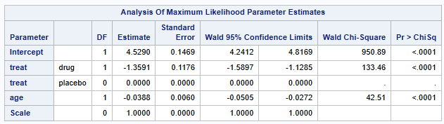
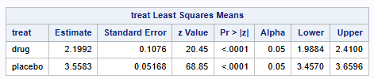
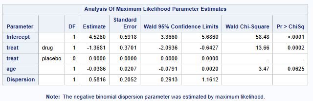
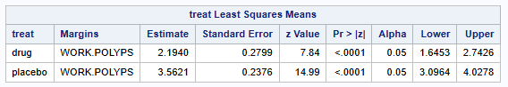

ods output ParameterEstimates=ORs lsmeans=lsm;
proc genmod data=polyps;
class treat (ref="placebo");
model number = treat age / dist=poisson;
lsmeans treat/ cl OM;
run;
ods output close;
# read in ORs and back transform the estimates (lsm can be done same way)
data bt_or;
set ors;
OR=exp(estimate);
OR_low=exp(lowerwaldcl);
OR_high=exp(upperwaldcl);
run;Poisson and Negative Binomial Regression in SAS
This page serves as an introduction to performing Poisson and Negative Binomial regression in SAS. For detail on how results compare between R and SAS see RvsSAS.
Regression for Count Data
The most commonly used models for count data in clinical trials include:
- Poisson regression: assumes the response variable Y has a Poisson distribution, which is linked using the logarithm with explanatory variables x.
\[ \text{log}(E(Y|x))= \beta_0 + \beta' x, \; i = 1,\ldots,n \]
Quasi-Poisson regression: Poisson model that allows overdispersion, i.e. dispersion parameter is not fixed at one.
Negative-Binomial regression: popular generalization which loosens the assumption that the variance is equal to the mean made by the Poisson model.
Other models include hurdle or zero-inflated models, if data have more zero observations than expected.
Example Data
To demonstrate the use of poisson and negative binomial regression we examine the same polyps dataset as used in the R example for poisson and negative binomial regression here.
Example: Poisson Model in SAS
In SAS, we can use proc genmod to perform poisson regression.
The OM (obsmargins) option
It is generally good practice to apply the OM option on the lsmeans statement. The standard (default) LS-means have equal coefficients across classification effects; however, the OM option changes these coefficients to be proportional to those found in OM-data-set. This adjustment is reasonable when you want your inferences to apply to a population that is not necessarily balanced but has the margins observed in OM-data-set. See here for more details.
Odds Ratios and 95% CIs
You can use exponential of the maximum likelihood parameter estimate (for treat and age in this example), and the exponential of the Wald 95% Confidence Limits to obtain the odds ratios and 95% CIs. Estimates of the least squares means and CI’s for each treatment are output using the lsmeans option. These estimates also have to be back transformed using exponential distribution to get the mean count back onto the original scale. Proc Genmod uses GLM parameterization.


Back transformation of the parameter estimates and 95% CIs produces the following results
Lsmean number of polyps (95% CI) on Drug: 9.02 (7.30 - 11.13)
Lsmean number of polyps (95% CI) on Placebo: 35.10 (31.72-38.84)
Odds ratio (95% CI)= 0.2569 (0.2040 - 0.3235)
Hence, patients on Drug have significantly less polyps than those on placebo.
Example: negative binomial in SAS
In SAS, we can use proc genmod to perform negative binomial regression. The below example assumes all patients are followed for the same duration, however if patients are followed for different durations, you should use offset=logtime on the model row as an option to offset the model by the log of the patients duration on the study.
Model parameterization is very similar to poisson
ods output ParameterEstimates=ORs lsmeans=lsm;
proc genmod data=polyps;
class treat (ref="placebo");
model number = treat age / dist=negbin link=log;
lsmeans treat/ cl OM;
run;
ods output close;
# read in lsmeans and back transform the estimates (ORs can be done same way)
data bt_lsm;
set lsm;
lsmean_count=exp(estimate);
mean_low=exp(lower);
mean_high=exp(upper);
run;

Back transformation of the parameter estimates and 95% CIs produces the following results
Lsmean number of polyps (95% CI) on Drug: 8.97 (5.18 - 15.53)
Lsmean number of polyps (95% CI) on Placebo: 35.24 (22.12-56.13)
Odds ratio Drug/Placebo (95% CI)= 0.2546 (0.1232 - 0.5259)
Hence, patients on Drug have significantly less polyps than those on placebo.
References
Created using : SAS release:9.04.01M7P08062020”